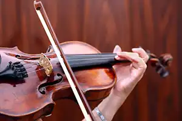

The Arrangement of Sounds
The Components of Music
What Are the Benefits of Music?
A Variety of Instruments
A Variety of Instruments
Guitar
Piano

Violin
Drums
Trumpet
Saxophone
Flute
Cello
Ukulele
Harp
 Ukulele
Harp
Ukulele
Harp